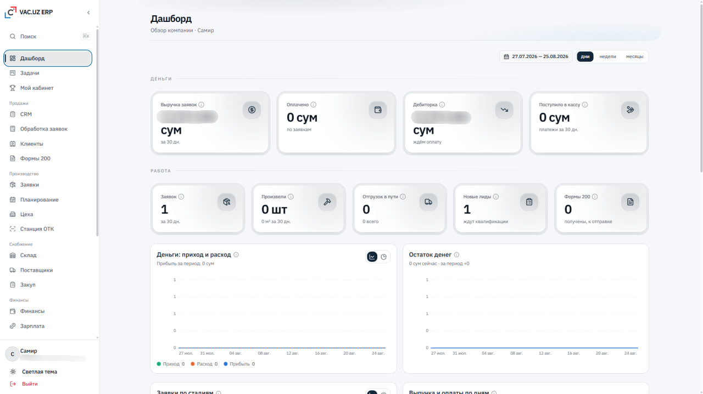
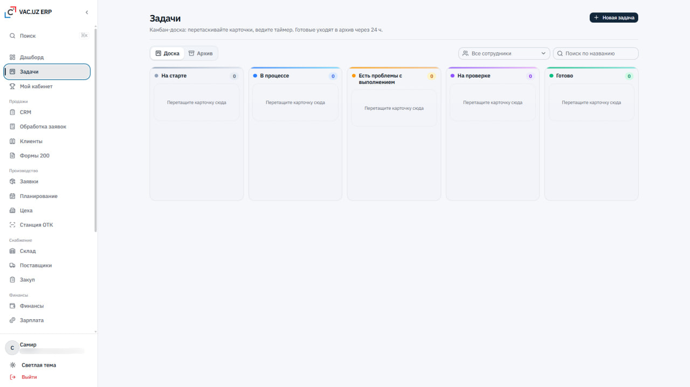
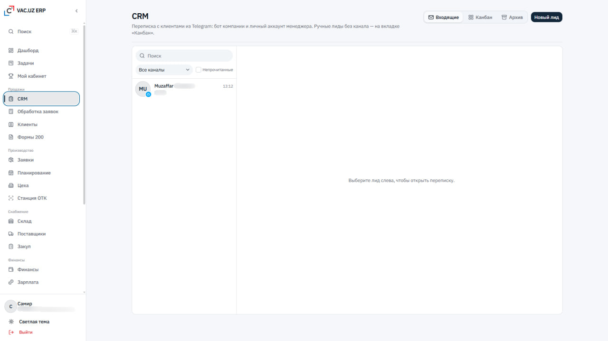
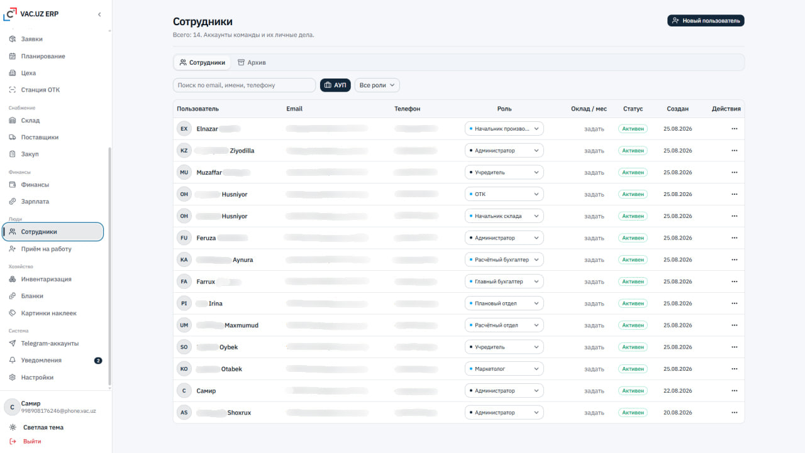
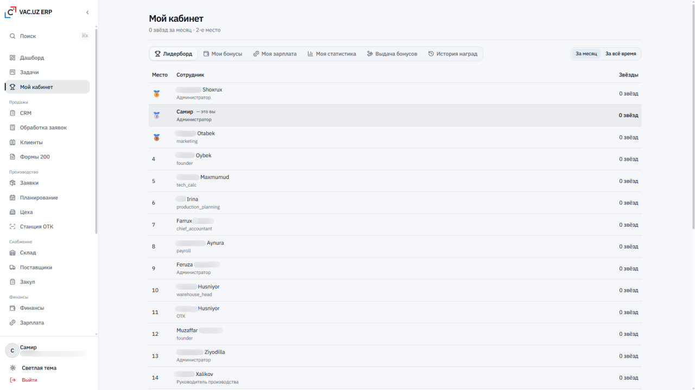

Bosh sahifa/Loyihalar/VAC.UZ
Zavod ishini bitta ERP ga yig'dik
VAC.UZ — ventilyatsiya kanallari ishlab chiqaruvchi kompaniya. Buyurtma qabul qilinishidan tayyor mahsulot jo'natilgunga qadar bo'lgan butun yo'l — arizalar, rejalashtirish, sexlar, OTK stansiyasi, ombor, xarid, moliya va jamoa — 24 ta bo'limdan iborat yagona tizimga yig'ildi.

Nimadan boshladik
Har bo'lim o'z daftarida ishlardi
Ishlab chiqarish korxonasida ma'lumot bir nechta joyda yashaydi: arizalar messenjerda, reja qog'ozda, ombor qoldig'i alohida jadvalda, moliya buxgalterda. Natijada oddiy savolga javob topish qiyin bo'ladi.
- Buyurtma qaysi bosqichda ekanini bilish uchun sexga qo'ng'iroq qilish kerak
- Ombor qoldig'i va xarid rejasi bir-biriga bog'lanmagan
- Rahbar oylik hisobotni oy tugagach ko'radi
- Mijoz bilan yozishmalar shaxsiy akkauntlarda qolib ketadi
Bitta tizim, ettita yo'nalish
Korxonaning haqiqiy jarayonini o'rganib, uni tizimga ko'chirdik: har bir bo'lim o'z ekranida ishlaydi, lekin hammasi bitta ma'lumot bazasiga yozadi. Rahbar uchun esa alohida hisobot yig'ish kerak emas — panel o'zi to'ladi.
- Sotuv, ishlab chiqarish, ta'minot, moliya, kadrlar, xo'jalik va tizim sozlamalari
- Rollar bo'yicha kirish: har kim faqat o'ziga tegishlisini ko'radi
- Telegram orqali kelgan murojaat to'g'ridan-to'g'ri CRM ga tushadi
- Har bir harakat kim va qachon qilgani bilan saqlanadi
Tizim ichida nima bor
Quyida — haqiqiy tizimning ekranlari. Interfeys rus tilida: kompaniya jamoasi shu tilda ishlaydi.
Boshqaruv paneli
Rahbarning birinchi ekrani. Yuqorida — pul: arizalar bo'yicha tushum, to'langan summa, debitorka va kassaga kirim. Pastda — ish: nechta ariza, qancha mahsulot ishlab chiqarildi, nechta jo'natma yo'lda, nechta yangi lid kutmoqda.
- Davr tanlash: kunlar, haftalar yoki oylar kesimida
- Kirim-chiqim va foyda grafigi, pul qoldig'i dinamikasi
- Arizalarning bosqichlar bo'yicha taqsimoti
Vazifalar taxtasi
Kanban-taxta beshta bosqichdan iborat: boshlanishda, jarayonda, muammo bor, tekshiruvda, tayyor. Kartochka sichqoncha bilan ko'chiriladi, har birida taymer yuritiladi, tugagan vazifalar 24 soatdan keyin arxivga o'tadi.
- «Muammo bor» ustuni — to'siqni yashirmaslik uchun alohida
- Xodim bo'yicha filtr va nom bo'yicha qidiruv
- Arxiv alohida yorliqda — taxta toza qoladi

CRM va Telegram
Mijoz bilan yozishma tizim ichida qoladi. Kompaniyaning Telegram boti va menejerning shaxsiy akkaunti bir joyga ulangan — xodim ishdan ketsa ham murojaatlar tarixi kompaniyada qoladi.
- Kiruvchi, kanban va arxiv — uchta ko'rinish
- Kanal bo'yicha filtr va o'qilmaganlar belgisi
- Kanalsiz lidlarni qo'lda kiritish mumkin

Jamoa va rollar
Bitta ro'yxatda butun jamoa: kim qaysi rolda, oylik qancha, akkaunt faolmi. Rol shu yerdan almashtiriladi — ishlab chiqarish boshlig'i, OTK, ombor boshlig'i, hisob-kitob buxgalteri, bosh buxgalter, marketolog va boshqalar.
- Email, ism yoki telefon bo'yicha qidiruv
- Ishdan bo'shaganlar arxivga o'tadi, ma'lumot yo'qolmaydi
- Rol kirish huquqini belgilaydi — alohida sozlash kerak emas

Xodim kabineti
Har bir xodimning o'z bo'limi: reyting, bonuslar, oylik va shaxsiy statistika. Yulduzlar tizimi jamoani bir-biri bilan emas, o'zining o'tgan oyi bilan solishtirishga undaydi.
- Oylik va umumiy davr bo'yicha liderbord
- Mening bonuslarim, oyligim va statistikam — alohida yorliqlarda
- Bonus berish va mukofotlar tarixi rahbar uchun

Nima o'zgardi
Sotuv, ishlab chiqarish va moliya bir xil raqamga qaraydi — jadval nusxalari kerak emas.
Buyurtma qaysi bosqichda ekani ekranda turadi, so'rab aniqlash shart emas.
Mijoz yozishmasi, rol o'zgarishi va har bir harakat tizimda qoladi.
Avenir OS
Keysni ochish → KonsaltingYakov and Partners
Keysni ochish → TradFi platformaDeFi Technologies
Keysni ochish → E-commerceAPEC Asia UAE
Keysni ochish →Sizda ham shunday jarayon bormi?
Brif to'ldirish shart emas — qisqacha yozing, qolganini savol berib aniqlaymiz.